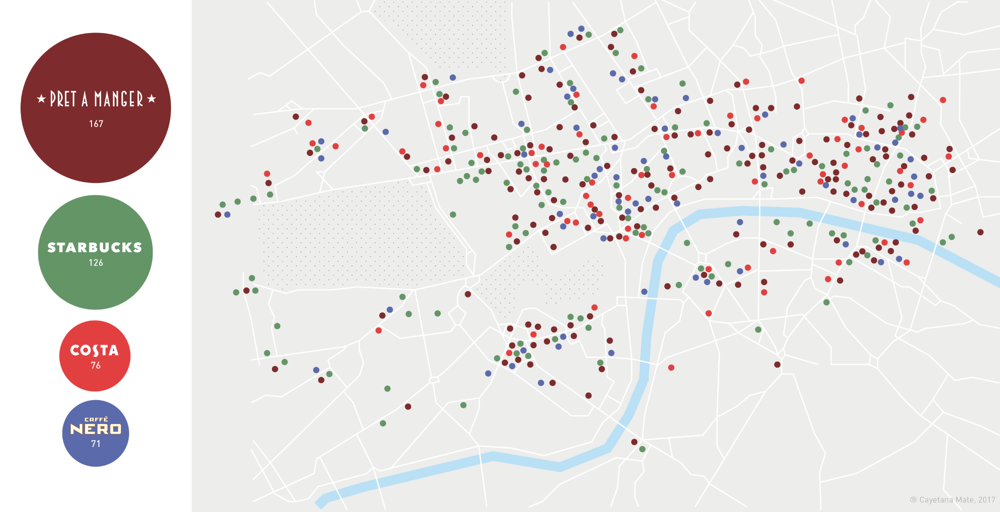

GOD SAVE THE...COFFEE?
DATA VISUALIZATION
¿Alguna vez te has fijado en la cantidad de cafeterías que puedes encontrar durante un paseo de 10 minutos por el centro de Londres?
Usando Google Maps como herramienta, anoté la ubicación de todos los Prêt a Manger, Starbucks, Caffè Nero y Costa, del centro de Londres (en 2017), y descubrí que muchas de las estaciones principales, como Waterloo o Victoria Station, eran fáciles de localizar por la cantidad de cafeterías que se concentran a su alrededor.
Have you ever realize the crazy amount of Cafes that you can find during a walk of 10 minutes in Central London?
Using Google Maps as tool, I jot down the location of all the Prêt a Manger, Starbucks, Caffè Nero and Costa from Central London (in 2017), discovering that many of the mains stations such as Waterloo or Victoria station were easy to find because of the number of cafes they concentrate around them.
